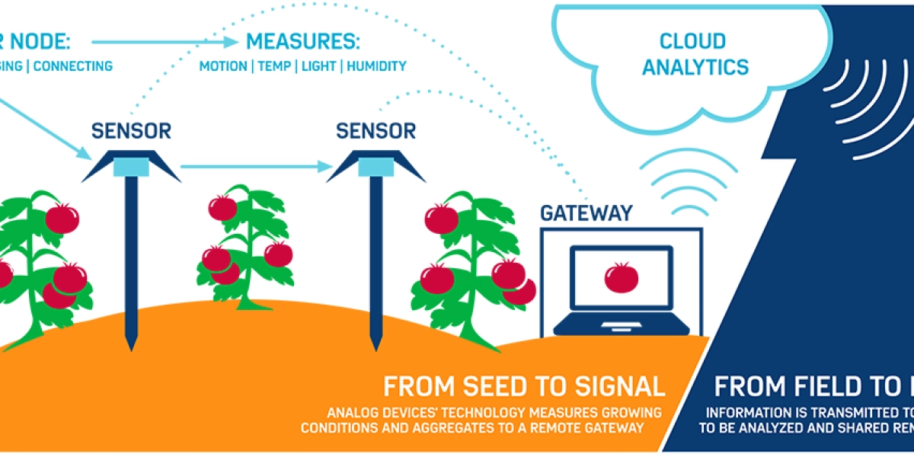
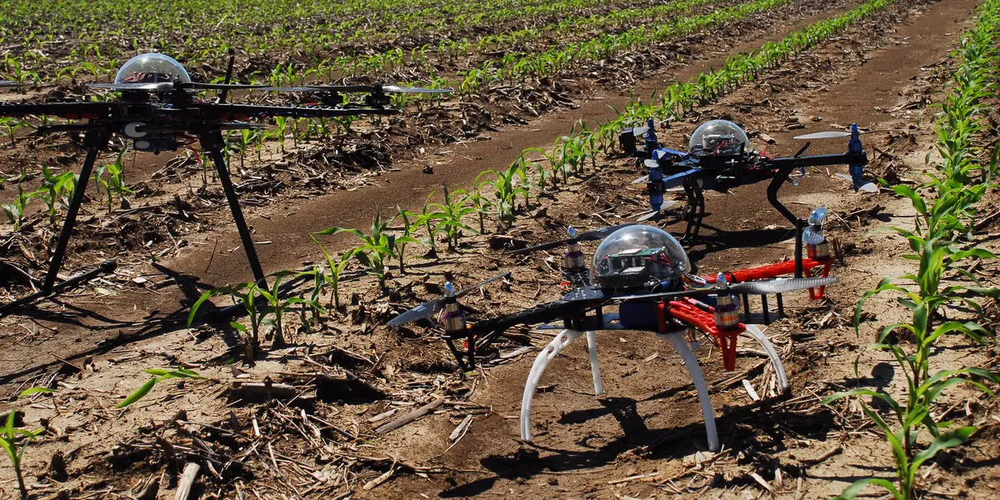

Internet of Things
The Internet of Things (IoT) in agriculture refers to the application of IoT technologies in the agricultural sector to improve efficiency, productivity, and sustainability. By connecting various devices, sensors, and systems, IoT enables real-time monitoring, data collection, and analysis, leading to informed decision-making and optimization of agricultural processes.
In an IoT-enabled agricultural system, sensors are deployed across fields, livestock, and equipment, collecting data on parameters such as soil moisture, temperature, humidity, crop growth, animal health, and machinery performance. These sensors transmit the data wirelessly to a central platform or cloud server, where it is processed and analyzed.
Keys benefits in IoT in Agriculture

Improved productivity
Efficient resource management
Risk mitigation
Predictive maintenance
Environmental sustainability
Analytics
the benefits of the Internet of Things (IoT) in agriculture is how IoT technology can revolutionize farming practices and bring significant advantages to the agricultural industry. This includes areas such as precision farming, resource management, livestock monitoring, crop and asset tracking, remote monitoring and automation, data-driven decision making, and enhanced food safety and traceability. By exploring these key benefits, we can understand the transformative impact of IoT on agriculture and the potential for increased efficiency, productivity, sustainability, and profitability in farming operations.
Advantages of using analytics in farming
Analytics in farming empowers farmers with valuable insights, enabling them to make data-driven decisions, optimize operations, mitigate risks, and improve productivity and profitability. By harnessing the power of analytics, farmers can embrace precision farming, sustainable practices, and adapt to the dynamic challenges of modern agriculture.

Improved crop monitoring
Precision agriculture
Cost and time savings
Enhanced safety
Real-time data and decision-making
Agricultural drones
Agricultural drones, also known as unmanned aerial vehicles (UAVs), are becoming increasingly popular in modern farming practices. These drones are equipped with various sensors, cameras, and imaging technology, which provide valuable data and insights for precision agriculture.
Advantages of Using UAV Drone in Farms
Agricultural drones provide advantages such as improved crop monitoring, precision agriculture, cost and time savings, enhanced safety, efficient land and resource management, real-time data and decision-making, and environmental sustainability. These benefits make drones valuable tools for modern farming, enabling farmers to optimize their operations, increase productivity, and promote sustainable practices.